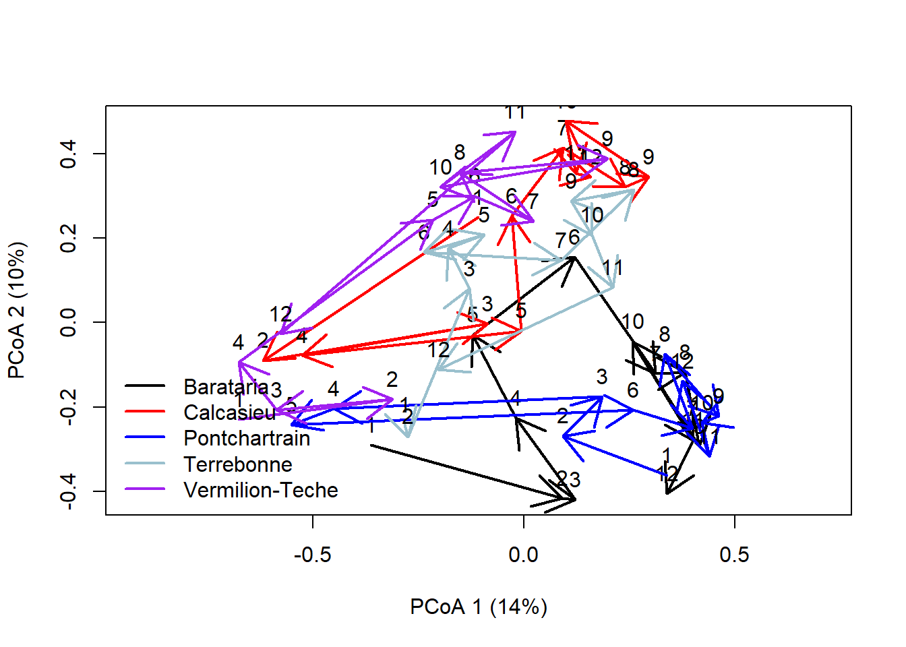
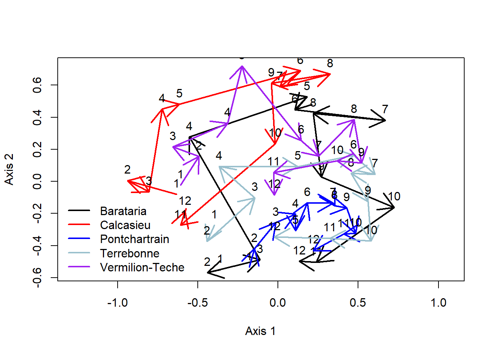
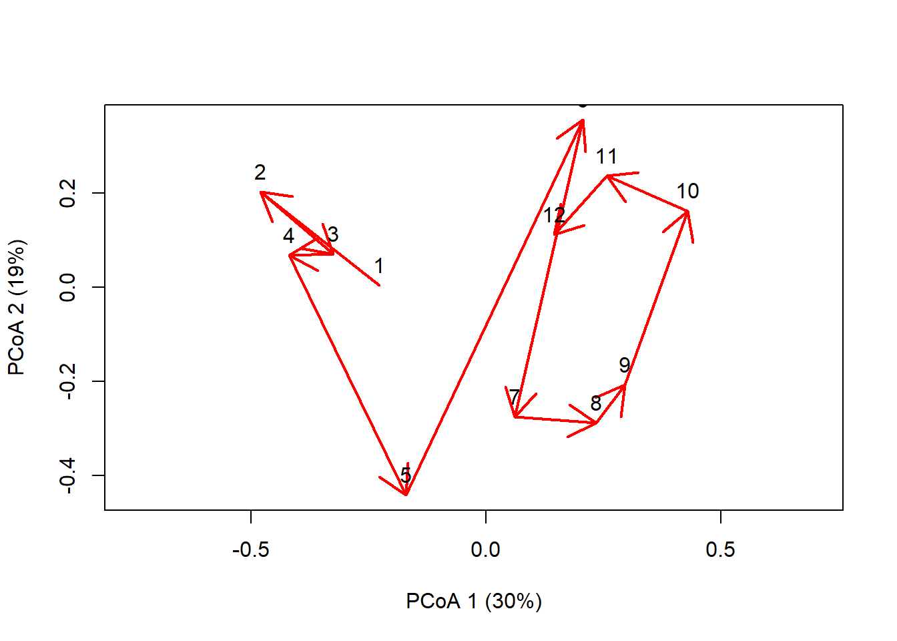
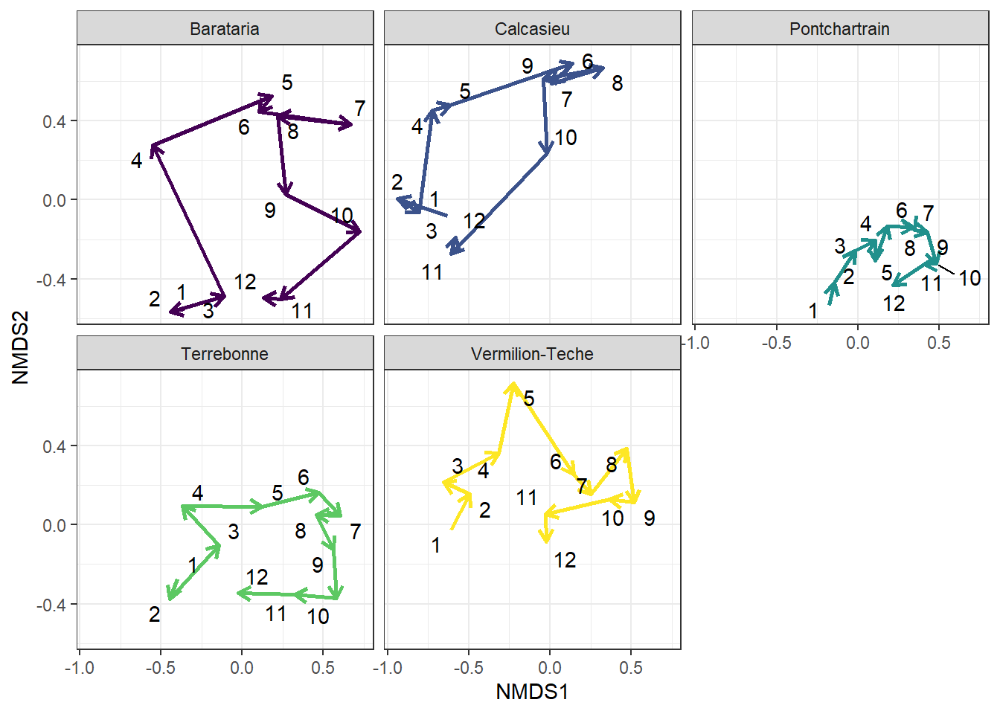
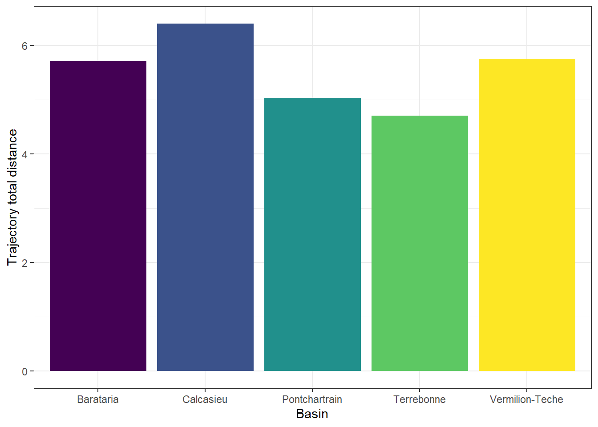
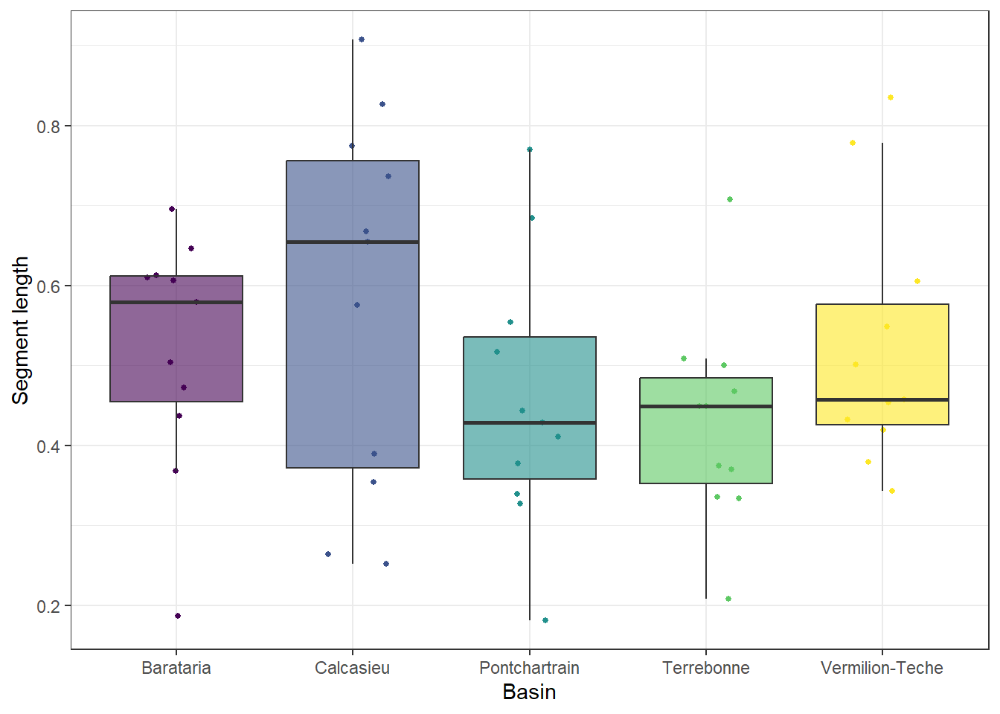
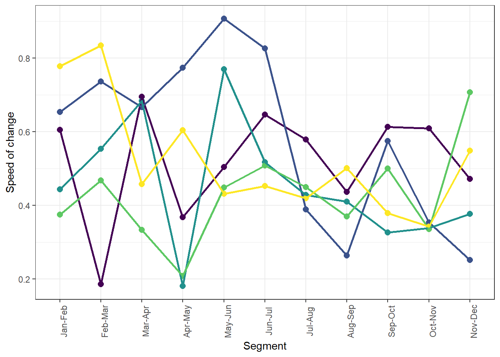
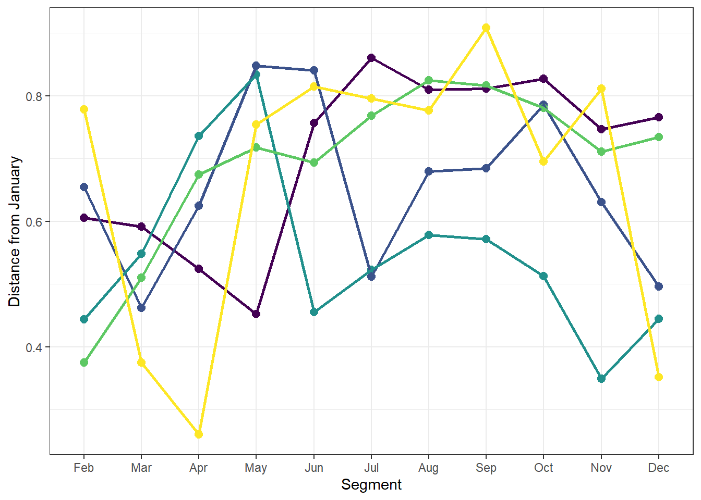
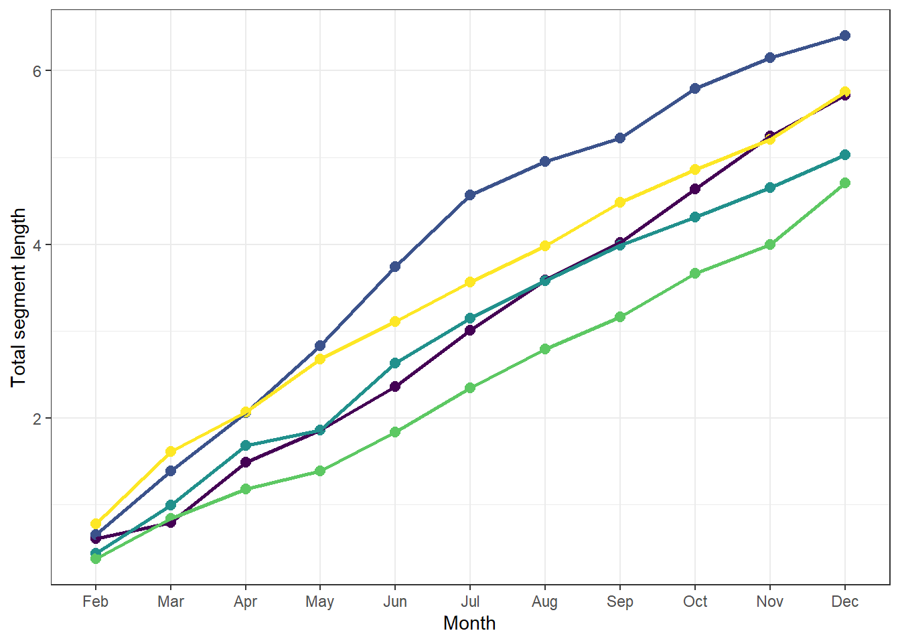

library(tidyverse)
## ── Attaching core tidyverse packages ──────────────────────── tidyverse 2.0.0 ──
## ✔ dplyr 1.1.4 ✔ readr 2.1.5
## ✔ forcats 1.0.0 ✔ stringr 1.5.1
## ✔ ggplot2 3.5.1 ✔ tibble 3.2.1
## ✔ lubridate 1.9.3 ✔ tidyr 1.3.1
## ✔ purrr 1.0.2
## ── Conflicts ────────────────────────────────────────── tidyverse_conflicts() ──
## ✖ dplyr::filter() masks stats::filter()
## ✖ dplyr::lag() masks stats::lag()
## ℹ Use the conflicted package (<http://conflicted.r-lib.org/>) to force all conflicts to become errors
library(ecotraj)
## Loading required package: Rcpp
library(vegan)
## Loading required package: permute
## Loading required package: lattice
## This is vegan 2.6-8
# load data and create community matrix
df = read_csv('data/LDWFseine_monthly2007.csv')
## Rows: 60 Columns: 127
## ── Column specification ────────────────────────────────────────────────────────
## Delimiter: ","
## chr (1): basin
## dbl (126): month, Atlantic Croaker, Atlantic Stingray, Bay Anchovy, Bay Whif...
##
## ℹ Use `spec()` to retrieve the full column specification for this data.
## ℹ Specify the column types or set `show_col_types = FALSE` to quiet this message.
df
## # A tibble: 60 × 127
## basin month `Atlantic Croaker` `Atlantic Stingray` `Bay Anchovy` `Bay Whiff`
## <chr> <dbl> <dbl> <dbl> <dbl> <dbl>
## 1 Barat… 1 4.67 1 54.2 1
## 2 Barat… 2 13.3 0 1.43 2
## 3 Barat… 3 11.7 0 4.62 1
## 4 Barat… 4 10.3 0 39.3 0
## 5 Barat… 5 4.1 0 87.9 1
## 6 Barat… 6 2.57 0 143. 12
## 7 Barat… 7 1.67 0 41.7 1
## 8 Barat… 8 3.2 0 57 0
## 9 Barat… 9 1 1 37 0
## 10 Barat… 10 2.33 0 69.3 1
## # ℹ 50 more rows
## # ℹ 121 more variables: `Blue Crab` <dbl>, `Brown Shrimp` <dbl>,
## # `Darter Goby` <dbl>, `Diamond Killifish` <dbl>, `Grass Shrimp Spp.` <dbl>,
## # `Gulf Killifish` <dbl>, `Gulf Menhaden` <dbl>, `Gulf Pipefish` <dbl>,
## # `Inland Silverside` <dbl>, `Mosquito Fish` <dbl>, `Naked Goby` <dbl>,
## # `Sharptail Goby` <dbl>, `Sheepshead Minnow` <dbl>, Skilletfish <dbl>,
## # `Spotted Porcelain Crab` <dbl>, `Spotted Seatrout` <dbl>, …
#community matrix
comm_matrix = df |> select(-basin, -month)
# site data
site = df$basin
# survey
survey = df$month
# create bray curtis dissimilarity matrix
b_dist = vegdist(comm_matrix, method = "bray")Workshop 9: Community data: trajectories
This workshop discusses working with community data by conducting trajectory analyses and introducing the package ecotraj.
R script: github
Community Trajectory Analysis
Community Trajectory Analysis (CTA) is a framework to analyze community dynamics described as trajectories. Community trajectory analysis takes trajectories as objects to be analyzed and compared geometrically.
We will be using the package ecotraj, and they have a great overview of the package with vignettes found here
Trajectory data
To specify community dynamics, we need three data items: - set of community states (i.e. coordinates in a space Ω), described using a distance matrix d
- A vector specifying the site (i.e. sampling unit) corresponding to each community state
- A vector specifying the survey (i.e. time point) corresponding to the sampling of each community state.
CTA is based on the analysis of information in the distance matrix Δ = [d]. Therefore, it does not require explicit coordinates. This is an advantage because it allows the analysis to be conducted on arbitrary metric (or semi-metric) spaces. The choice of d is left to the user and will depend on the problem at hand.
Displaying trajectories
To begin our analysis of the three trajectories, we display them in an ordination space, using function trajectoryPCoA(). Since Ω has only two dimensions in this example, the Principal Coordinates Analysis (PCoA) on d displays the complete space:
# plot trajectories
trajectoryPCoA(d = b_dist,
sites = site,
surveys = survey,
traj.colors = c("black","red", "blue", 'lightblue3', 'purple', 'pink'),
lwd = 2,
survey.labels = T)
legend("bottomleft", col=c("black","red", "blue", 'lightblue3', 'purple', 'pink'),
legend=unique(df$basin), bty="n", lty=1, lwd = 2)
trajectoryPCoA() uses PCoA to display the dissimilarity matrix, but other methods can be used. We can use trajectoryPlot() on visualizations (e.g., nMDS) as long as we have x and y coordinates
# can be done with other ways
nmds = metaMDS(comm_matrix, distance = "bray", k = 2, try = 100)
## Square root transformation
## Wisconsin double standardization
## Run 0 stress 0.2274282
## Run 1 stress 0.2274282
## ... Procrustes: rmse 1.180842e-05 max resid 4.736353e-05
## ... Similar to previous best
## Run 2 stress 0.2291718
## Run 3 stress 0.2297463
## Run 4 stress 0.2593159
## Run 5 stress 0.2274331
## ... Procrustes: rmse 0.00169924 max resid 0.009863031
## ... Similar to previous best
## Run 6 stress 0.2297582
## Run 7 stress 0.2297462
## Run 8 stress 0.2274282
## ... New best solution
## ... Procrustes: rmse 1.221638e-05 max resid 6.040869e-05
## ... Similar to previous best
## Run 9 stress 0.2274282
## ... Procrustes: rmse 1.517141e-06 max resid 4.099648e-06
## ... Similar to previous best
## Run 10 stress 0.2274331
## ... Procrustes: rmse 0.001712677 max resid 0.009948331
## ... Similar to previous best
## Run 11 stress 0.2274331
## ... Procrustes: rmse 0.00172207 max resid 0.010007
## Run 12 stress 0.2293732
## Run 13 stress 0.2293731
## Run 14 stress 0.2380905
## Run 15 stress 0.2666441
## Run 16 stress 0.2274331
## ... Procrustes: rmse 0.001712044 max resid 0.009946182
## ... Similar to previous best
## Run 17 stress 0.2439079
## Run 18 stress 0.2295724
## Run 19 stress 0.2380905
## Run 20 stress 0.2297654
## *** Best solution repeated 4 times
trajectoryPlot(x = nmds$points,
sites = df$basin,
surveys = df$month,
traj.colors = c("black","red", "blue", 'lightblue3', 'purple', 'pink'),
lwd = 2,
survey.labels = T)
legend("bottomleft", col=c("black","red", "blue", 'lightblue3', 'purple', 'pink'),
legend=unique(df$basin), bty="n", lty=1, lwd = 2)
We can also specify selection = in trajectoryPCoA() and trajectoryPlot() to highlight specific trajectories
trajectoryPCoA(d = b_dist,
sites = df$basin,
surveys = df$month,
selection = 'Calcasieu',
traj.colors = c("red"),
lwd = 2,
survey.labels = T)
We can also extract the raw information and plot ourselves in ggplot so it is easier to visualize
# convert nMDS to tibble
df_nmds = tibble(basin = site,
month = survey,
data.frame(nmds[["points"]])) |>
# add end points of each segment for arrow
group_by(basin) |>
mutate(xend = lead(MDS1), yend = lead(MDS2))
library(viridis)
library(ggrepel)
# plot
ggplot(df_nmds, aes(MDS1, MDS2))+
geom_segment(aes(xend = xend, yend = yend, color = basin),
linewidth = 1,
arrow = arrow(length = unit(0.25, "cm")))+
ggrepel::geom_text_repel(aes(label=month))+
facet_wrap(~basin)+
labs(x = 'NMDS1', y = 'NMDS2',
color = 'Basin')+
scale_color_viridis_d()+
theme_bw()+
theme(legend.position = 'none')
## Warning: Removed 1 row containing missing values or values outside the scale range
## (`geom_segment()`).
## Removed 1 row containing missing values or values outside the scale range
## (`geom_segment()`).
## Removed 1 row containing missing values or values outside the scale range
## (`geom_segment()`).
## Removed 1 row containing missing values or values outside the scale range
## (`geom_segment()`).
## Removed 1 row containing missing values or values outside the scale range
## (`geom_segment()`).
Trajectory segment length and total length
trajectoryLengths() can be used to get the segment length of each time step and the overall distance.
trajectoryLengths(b_dist, site, survey)
## S1 S2 S3 S4 S5 S6
## Barataria 0.6058196 0.1863335 0.6951996 0.3683322 0.5040565 0.6466593
## Calcasieu 0.6544267 0.7369193 0.6674954 0.7741885 0.9074733 0.8266994
## Pontchartrain 0.4434848 0.5541205 0.6840378 0.1808410 0.7703344 0.5172024
## Terrebonne 0.3750622 0.4680416 0.3337381 0.2084657 0.4490802 0.5084592
## Vermilion-Teche 0.7783232 0.8348226 0.4576137 0.6049397 0.4322798 0.4533951
## S7 S8 S9 S10 S11 Trajectory
## Barataria 0.5796817 0.4373050 0.6131810 0.6098492 0.4720391 5.718457
## Calcasieu 0.3896172 0.2640077 0.5755067 0.3544309 0.2518182 6.402583
## Pontchartrain 0.4283926 0.4108200 0.3269928 0.3390632 0.3771031 5.032393
## Terrebonne 0.4495234 0.3698038 0.5004380 0.3356094 0.7072511 4.705473
## Vermilion-Teche 0.4191935 0.5012365 0.3794442 0.3430388 0.5488932 5.753180
tl = trajectoryLengths(b_dist, site, survey) |>
rownames_to_column(var = 'basin') |>
as_tibble()
# total trajectory length
ggplot(tl, aes(basin, Trajectory, fill = basin))+
geom_col()+
labs(x = 'Basin', y = 'Trajectory total distance')+
scale_fill_viridis_d()+
theme_bw()+
theme(legend.position = 'none')
# segment length
tll = tl |>
pivot_longer(S1:S11, names_to = 'seg', values_to = 'len') |>
mutate(seg = factor(seg, levels = c('S1', 'S2','S3', 'S4',
'S5', 'S6','S7', 'S8',
'S9', 'S10','S11')))
tll |> group_by(basin) |>
summarize(mean = mean(len, na.rm = T),
sd = sd(len, na.rm = T))
## # A tibble: 5 × 3
## basin mean sd
## <chr> <dbl> <dbl>
## 1 Barataria 0.520 0.148
## 2 Calcasieu 0.582 0.232
## 3 Pontchartrain 0.457 0.167
## 4 Terrebonne 0.428 0.128
## 5 Vermilion-Teche 0.523 0.159
ggplot(tll, aes(basin, len, fill = basin))+
geom_point(aes(color = basin), size = 1,
position = position_jitterdodge())+
geom_boxplot(outliers = F, alpha = 0.6)+
labs(x = 'Basin', y = 'Segment length')+
scale_fill_viridis_d()+
scale_color_viridis_d()+
theme_bw()+
theme(legend.position = 'none')
Speed of change
The speed of change is represented by the segment length divided by the time of change and is calculated with the formula \[ S(s_i) = {L(s_i)}/{t_{i+1}-t_i}\] where \(S(s_i)\) is the speed of segment \(i\), \(L(s_i)\) is the length of segment \(i\), \(t_i\) start time for segment \(i\), and \(t_{i+1}\) is the time at end of segment \(i\).
# plot
ggplot(tll, aes(seg, len, group = basin, color = basin))+
geom_point(size = 2.5)+
geom_line(linewidth = 1)+
labs(x = 'Segment', y = 'Speed of change')+
scale_x_discrete(labels =c('Jan-Feb', 'Feb-Mar', 'Mar-Apr',
'Apr-May', 'May-Jun', 'Jun-Jul',
'Jul-Aug', 'Aug-Sep', 'Sep-Oct',
'Oct-Nov', 'Nov-Dec'))+
scale_color_viridis_d()+
theme_bw()+
theme(legend.position = 'none',
axis.text.x = element_text(angle = 90))
Distance from Baseline
trajectoryLengths() can be used to get the relative distance to the baseline when relativeToInitial = T.
trajectoryLengths(b_dist, site, survey, relativeToInitial = T)
## Lt1_t2 Lt1_t3 Lt1_t4 Lt1_t5 Lt1_t6 Lt1_t7
## Barataria 0.6058196 0.5917244 0.5237678 0.4518291 0.7562538 0.8601040
## Calcasieu 0.6544267 0.4619394 0.6244757 0.8477104 0.8404484 0.5115264
## Pontchartrain 0.4434848 0.5483713 0.7360968 0.8340467 0.4554977 0.5228544
## Terrebonne 0.3750622 0.5101321 0.6743154 0.7179223 0.6934165 0.7683502
## Vermilion-Teche 0.7783232 0.3749339 0.2598511 0.7543423 0.8150308 0.7959850
## Lt1_t8 Lt1_t9 Lt1_t10 Lt1_t11 Lt1_t12 Trajectory
## Barataria 0.8098396 0.8114977 0.8271485 0.7464037 0.7654146 7.749803
## Calcasieu 0.6792555 0.6842491 0.7856673 0.6306801 0.4956114 7.215990
## Pontchartrain 0.5781794 0.5716669 0.5127883 0.3493540 0.4444345 5.996775
## Terrebonne 0.8243958 0.8161678 0.7807234 0.7110774 0.7341720 7.605735
## Vermilion-Teche 0.7764932 0.9083811 0.6953741 0.8112459 0.3513388 7.321299
tl_init = trajectoryLengths(b_dist, site, survey,
relativeToInitial = T) |>
rownames_to_column(var = 'basin') |>
as_tibble() |>
pivot_longer(Lt1_t2:Lt1_t12, names_to = 'seg',
values_to = 'len') |>
mutate(month = str_sub(seg,6) |> as.numeric())
ggplot(tl_init, aes(factor(month), len, group = basin, color = basin))+
geom_point(size = 2.5)+
geom_line(linewidth = 1)+
labs(x = 'Segment', y = 'Distance from January')+
scale_x_discrete(labels =c('Feb', 'Mar', 'Apr',
'May', 'Jun', 'Jul',
'Aug', 'Sep', 'Oct',
'Nov', 'Dec'))+
scale_color_viridis_d()+
theme_bw()+
theme(legend.position = 'none')
Cumulative distance
You can use the output from the trajectoryDistance() to calculate the cumulative sum of the trajectory
tll = tll |>
group_by(basin) |>
mutate(dist_cuml = cumsum(len))
ggplot(tll, aes(seg, dist_cuml, group = basin, color = basin))+
geom_point(size = 2.5)+
geom_line(linewidth = 1)+
labs(x = 'Month', y = 'Total segment length')+
scale_x_discrete(labels =c('Feb', 'Mar', 'Apr',
'May', 'Jun', 'Jul',
'Aug', 'Sep', 'Oct',
'Nov', 'Dec'))+
scale_color_viridis_d()+
theme_bw()+
theme(legend.position = 'none')
Exercises
For these exercises use the LDWF Calcasieu seine sampling dataset.
Using the Calcasieu dataset plot the community trajectory for each site.
Calculate the total path length at each site.
Plot the speed of change at each site.
Plot the cumulative length at each time step for each site.